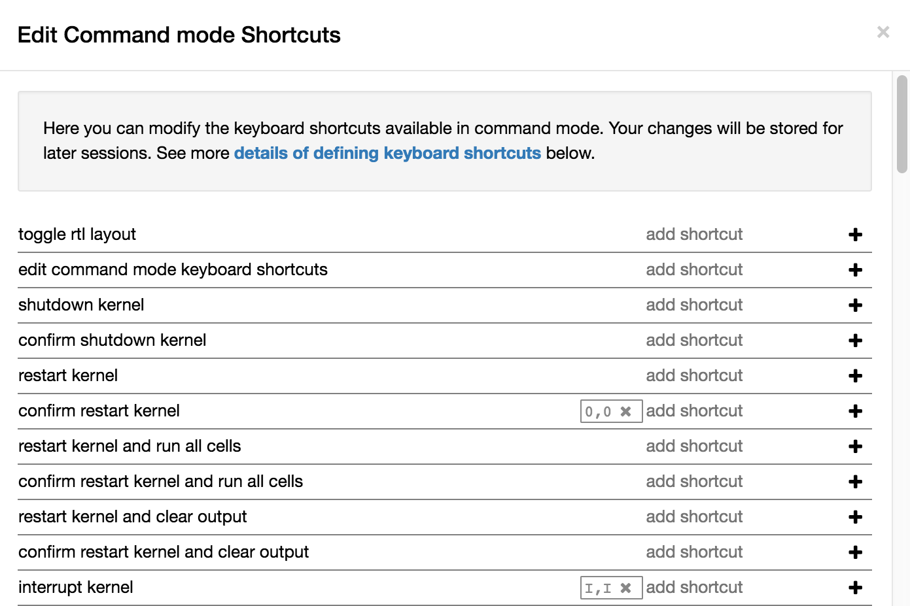
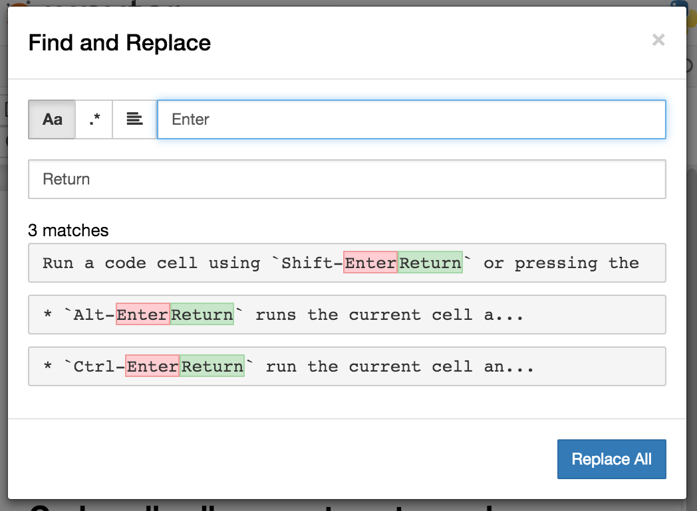

Changelog¶
A summary of changes in the Jupyter notebook. For more detailed information, see GitHub.
참고
Use pip install notebook --upgrade or conda upgrade notebook to
upgrade to the latest release.
We strongly recommend that you upgrade pip to version 9+ of pip before upgrading notebook.
참고
Use pip install pip --upgrade to upgrade pip. Check pip version with
pip --version.
5.7.4¶
5.7.4 fixes a bug introduced in 5.7.3, in which the list_running_servers()
function attempts to parse HTML files as JSON, and consequently crashes
(PR #4284).
5.7.3¶
5.7.3 contains one security improvement and one security fix:
- Launch the browser with a local file which redirects to the server address including the authentication token (PR #4260). This prevents another logged-in user from stealing the token from command line arguments and authenticating to the server. The single-use token previously used to mitigate this has been removed. Thanks to Dr. Owain Kenway for suggesting the local file approach.
- Upgrade bootstrap to 3.4, fixing an XSS vulnerability, which has been assigned CVE-2018-14041 (PR #4271).
5.7.2¶
5.7.2 contains a security fix preventing malicious directory names from being able to execute javascript. CVE request pending.
5.7.1¶
5.7.1 contains a security fix preventing nbconvert endpoints from executing javascript with access to the server API. CVE request pending.
5.7.0¶
New features:
- Update to CodeMirror to 5.37, which includes f-string sytax for Python 3.6 (PR #3816)
- Update jquery-ui to 1.12 (PR #3836)
- Check Host header to more securely protect localhost deployments from DNS rebinding.
This is a pre-emptive measure, not fixing a known vulnerability (PR #3766).
Use
.NotebookApp.allow_remote_accessand.NotebookApp.local_hostnamesto configure access. - Allow access-control-allow-headers to be overridden (PR #3886)
- Allow configuring max_body_size and max_buffer_size (PR #3829)
- Allow configuring get_secure_cookie keyword-args (PR #3778)
- Respect nbconvert entrypoints as sources for exporters (PR #3879)
- Include translation sources in source distributions (PR #3925, PR #3931)
- Various improvements to documentation (PR #3799, PR #3800, PR #3806, PR #3883, PR #3908)
Fixing problems:
- Fix breadcrumb link when running with a base url (PR #3905)
- Fix possible type error when closing activity stream (PR #3907)
- Disable metadata editing for non-editable cells (PR #3744)
- Fix some styling and alignment of prompts caused by regressions in 5.6.0.
- Enter causing page reload in shortcuts editor (PR #3871)
- Fix uploading to the same file twice (PR #3712)
See the 5.7 milestone on GitHub for a complete list of pull requests involved in this release.
Thanks to the following contributors:
- Aaron Hall
- Benjamin Ragan-Kelley
- Bill Major
- bxy007
- Dave Aitken
- Denis Ledoux
- Félix-Antoine Fortin
- Gabriel
- Grant Nestor
- Kevin Bates
- Kristian Gregorius Hustad
- M Pacer
- Madicken Munk
- Maitiu O Ciarain
- Matthias Bussonnier
- Michael Boyle
- Michael Chirico
- Mokkapati, Praneet(ES)
- Peter Parente
- Sally Wilsak
- Steven Silvester
- Thomas Kluyver
- Walter Martin
5.6.0¶
New features:
- Execute cells by clicking icon in input prompt (PR #3535, PR #3687)
- New "Save as" menu option (PR #3289)
- When serving on a loopback interface, protect against DNS rebinding by
checking the
Hostheader from the browser (PR #3714). This check can be disabled if necessary by settingNotebookApp.allow_remote_access. (Disabled by default while we work out some Mac issues in #3754). - Add kernel_info_timeout traitlet to enable restarting slow kernels (PR #3665)
- Add
custom_display_hostconfig option to override displayed URL (PR #3668) - Add /metrics endpoint for Prometheus Metrics (PR #3490)
- Update to MathJax 2.7.4 (PR #3751)
- Update to jQuery 3.3 (PR #3655)
- Update marked to 0.4 (PR #3686)
Fixing problems:
- Don't duplicate token in displayed URL (PR #3656)
- Clarify displayed URL when listening on all interfaces (PR #3703)
- Don't trash non-empty directories on Windows (PR #3673)
- Include LICENSE file in wheels (PR #3671)
- Don't show "0 active kernels" when starting the notebook (PR #3696)
Testing:
- Add find replace test (PR #3630)
- Selenium test for deleting all cells (PR #3601)
- Make creating a new notebook more robust (PR #3726)
Thanks to the following contributors:
- Arovit Narula (arovit)
- lucasoshiro (lucasoshiro)
- M Pacer (mpacer)
- Thomas Kluyver (takluyver)
- Todd (toddrme2178)
- Yuvi Panda (yuvipanda)
See the 5.6 milestone on GitHub for a complete list of pull requests involved in this release.
5.5.0¶
New features:
- The files list now shows file sizes (PR #3539)
- Add a quit button in the dashboard (PR #3004)
- Display hostname in the terminal when running remotely (PR #3356, PR #3593)
- Add slides exportation/download to the menu (PR #3287)
- Add any extra installed nbconvert exporters to the "Download as" menu (PR #3323)
- Editor: warning when overwriting a file that is modified on disk (PR #2783)
- Display a warning message if cookies are not enabled (PR #3511)
- Basic
__version__reporting for extensions (PR #3541) - Add
NotebookApp.terminals_enabledconfig option (PR #3478) - Make buffer time between last modified on disk and last modified on last save configurable (PR #3273)
- Allow binding custom shortcuts for 'close and halt' (PR #3314)
- Add description for 'Trusted' notification (PR #3386)
- Add
settings['activity_sources'](PR #3401) - Add an
output_updated.OutputAreaevent (PR #3560)
Fixing problems:
- Fixes to improve web accessibility (PR #3507)
- There is more to do on this! See #1801.
- Fixed color contrast issue in tree.less (PR #3336)
- Allow cancelling upload of large files (PR #3373)
- Don't clear login cookie on requests without cookie (PR #3380)
- Don't trash files on different device to home dir on Linux (PR #3304)
- Clear waiting asterisks when restarting kernel (PR #3494)
- Fix output prompt when
execution_countmissing (PR #3236) - Make the 'changed on disk' dialog work when displayed twice (PR #3589)
- Fix going back to root directory with history in notebook list (PR #3411)
- Allow defining keyboard shortcuts for missing actions (PR #3561)
- Prevent default on pageup/pagedown when completer is active (PR #3500)
- Prevent default event handling on new terminal (PR #3497)
- ConfigManager should not write out default values found in the .d directory (PR #3485)
- Fix leak of iopub object in activity monitoring (PR #3424)
- Javascript lint in notebooklist.js (PR #3409)
- Some Javascript syntax fixes (PR #3294)
- Convert native for loop to
Array.forEach()(PR #3477) - Disable cache when downloading nbconvert output (PR #3484)
- Add missing digestmod arg to HMAC (PR #3399)
- Log OSErrors failing to create less-critical files during startup (PR #3384)
- Use powershell on Windows (PR #3379)
- API spec improvements, API handler improvements (PR #3368)
- Set notebook to dirty state after change to kernel metadata (PR #3350)
- Use CSP header to treat served files as belonging to a separate origin (PR #3341)
- Don't install gettext into builtins (PR #3330)
- Add missing
import _(PR #3316, PR #3326) - Write
notebook.jsonfile atomically (PR #3305) - Fix clicking with modifiers, page title updates (PR #3282)
- Upgrade jQuery to version 2.2 (PR #3428)
- Upgrade xterm.js to 3.1.0 (PR #3189)
- Upgrade moment.js to 2.19.3 (PR #3562)
- Upgrade CodeMirror to 5.35 (PR #3372)
- "Require" pyzmq>=17 (PR #3586)
Documentation:
- Documentation updates and organisation (PR #3584)
- Add section in docs about privacy (PR #3571)
- Add explanation on how to change the type of a cell to Markdown (PR #3377)
- Update docs with confd implementation details (PR #3520)
- Add more information for where
jupyter_notebook_config.pyis located (PR #3346) - Document options to enable nbextensions in specific sections (PR #3525)
- jQuery attribute selector value MUST be surrounded by quotes (PR #3527)
- Do not execute special notebooks with nbsphinx (PR #3360)
- Other minor fixes in PR #3288, PR #3528, PR #3293, PR #3367
Testing:
- Testing with Selenium & Sauce labs (PR #3321)
- Selenium utils + markdown rendering tests (PR #3458)
- Convert insert cell tests to Selenium (PR #3508)
- Convert prompt numbers tests to Selenium (PR #3554)
- Convert delete cells tests to Selenium (PR #3465)
- Convert undelete cell tests to Selenium (PR #3475)
- More selenium testing utilities (PR #3412)
- Only check links when build is trigger by Travis Cron job (PR #3493)
- Fix Appveyor build errors (PR #3430)
- Undo patches in teardown before attempting to delete files (PR #3459)
- Get tests running with tornado 5 (PR #3398)
- Unpin ipykernel version on Travis (PR #3223)
Thanks to the following contributors:
- Arovit Narula (arovit)
- Ashley Teoh (ashleytqy)
- Nicholas Bollweg (bollwyvl)
- Alex Rothberg (cancan101)
- Celina Kilcrease (ckilcrease)
- dabuside (dabuside)
- Damian Avila (damianavila)
- Dana Lee (danagilliann)
- Dave Hirschfeld (dhirschfeld)
- Heng GAO (ehengao)
- Leo Gallucci (elgalu)
- Evan Van Dam (evandam)
- forbxy (forbxy)
- Grant Nestor (gnestor)
- Ethan T. Hendrix (hendrixet)
- Miro Hrončok (hroncok)
- Paul Ivanov (ivanov)
- Darío Hereñú (kant)
- Kevin Bates (kevin-bates)
- Maarten Breddels (maartenbreddels)
- Michael Droettboom (mdboom)
- Min RK (minrk)
- M Pacer (mpacer)
- Peter Parente (parente)
- Paul Masson (paulmasson)
- Philipp Rudiger (philippjfr)
- Mac Knight (Shels1909)
- Hisham Elsheshtawy (Sheshtawy)
- Simon Biggs (SimonBiggs)
- Sunil Hari (sunilhari)
- Thomas Kluyver (takluyver)
- Tim Klever (tklever)
- Gabriel Ruiz (unnamedplay-r)
- Vaibhav Sagar (vaibhavsagar)
- William Hosford (whosford)
- Hong (xuhdev)
See the 5.5 milestone on GitHub for a complete list of pull requests involved in this release.
5.4.1¶
A security release to fix CVE-2018-8768.
Thanks to Alex for identifying this bug, and Jonathan Kamens and Scott Sanderson at Quantopian for verifying it and bringing it to our attention.
5.4.0¶
- Fix creating files and folders after navigating directories in the dashboard (PR #3264).
- Enable printing notebooks in colour, removing the CSS that made everything black and white (PR #3212).
- Limit the completion options displayed in the notebook to 1000, to avoid performance issues with very long lists (PR #3195).
- Accessibility improvements in
tree.html(PR #3271). - Added alt-text to the kernel logo image in the notebook UI (PR #3228).
- Added a test on Travis CI to flag if symlinks are accidentally introduced in the future. This should prevent the issue that necessitated 5.3.1 (PR #3227).
- Use lowercase letters for random IDs generated in our Javascript (PR #3264).
- Removed duplicate code setting
TextCell.notebook(PR #3256).
Thanks to the following contributors:
- Alex Soderman (asoderman)
- Matthias Bussonnier (Carreau)
- Min RK (minrk)
- Nitesh Sawant (ns23)
- Thomas Kluyver (takluyver)
- Yuvi Panda (yuvipanda)
See the 5.4 milestone on GitHub for a complete list of pull requests involved in this release.
5.3.1¶
Replaced a symlink in the repository with a copy, to fix issues installing on Windows (PR #3220).
5.3.0¶
This release introduces a couple noteable improvements, such as terminal support for Windows and support for OS trash (files deleted from the notebook dashboard are moved to the OS trash vs. deleted permanently).
- Add support for terminals on windows (PR #3087).
- Add a "restart and run all" button to the toolbar (PR #2965).
- Send files to os trash mechanism on delete (PR #1968).
- Allow programmatic copy to clipboard (PR #3088).
- Use DOM History API for navigating between directories in the file browser (PR #3115).
- Add translated files to folder(docs-translations) (PR #3065).
- Allow non empty dirs to be deleted (PR #3108).
- Set cookie on base_url (PR #2959).
- Allow token-authenticated requests cross-origin by default (PR #2920).
- Change cull_idle_timeout_minimum to 1 from 300 (PR #2910).
- Config option to shut down server after n seconds with no kernels (PR #2963).
- Display a "close" button on load notebook error (PR #3176).
- Add action to command pallette to run CodeMirror's "indentAuto" on selection (PR #3175).
- Add option to specify extra services (PR #3158).
- Warn_bad_name should not use global name (PR #3160).
- Avoid overflow of hidden form (PR #3148).
- Fix shutdown trans loss (PR #3147).
- Find available kernelspecs more efficiently (PR #3136).
- Don't try to translate missing help strings (PR #3122).
- Frontend/extension-config: allow default json files in a .d directory (PR #3116).
- Use requirejs vs. require (PR #3097).
- Fixes some ui bugs in firefox #3044 (PR #3058).
- Compare non-specific language code when choosing to use arabic numerals (PR #3055).
- Fix save-script deprecation (PR #3053).
- Include moment locales in package_data (PR #3051).
- Fix moment locale loading in bidi support (PR #3048).
- Tornado 5: periodiccallback loop arg will be removed (PR #3034).
- Use /files prefix for pdf-like files (PR #3031).
- Add folder for document translation (PR #3022).
- When login-in via token, let a chance for user to set the password (PR #3008).
- Switch to jupyter_core implementation of ensure_dir_exists (PR #3002).
- Send http shutdown request on 'stop' subcommand (PR #3000).
- Work on loading ui translations (PR #2969).
- Fix ansi inverse (PR #2967).
- Add send2trash to requirements for building docs (PR #2964).
- I18n readme.md improvement (PR #2962).
- Add 'reason' field to json error responses (PR #2958).
- Add some padding for stream outputs (PR #3194).
- Always use setuptools in
setup.py(PR #3206). - Fix clearing cookies on logout when
base_urlis configured (PR #3207).
Thanks to the following contributors:
- bacboc (bacboc)
- Steven Silvester (blink1073)
- Matthias Bussonnier (Carreau)
- ChungJooHo (ChungJooHo)
- edida (edida)
- Francesco Franchina (
ferdas) - forbxy (forbxy)
- Grant Nestor (gnestor)
- Josh Barnes (jcb91)
- JocelynDelalande (JocelynDelalande)
- Karthik Balakrishnan (karthikb351)
- Kevin Bates (kevin-bates)
- Kirit Thadaka (kirit93)
- Lilian Besson (Naereen)
- Maarten Breddels (maartenbreddels)
- Madhu94 (Madhu94)
- Matthias Geier (mgeier)
- Michael Heilman (mheilman)
- Min RK (minrk)
- PHaeJin (PHaeJin)
- Sukneet (Sukneet)
- Thomas Kluyver (takluyver)
See the 5.3 milestone on GitHub for a complete list of pull requests involved in this release.
5.2.1¶
- Fix invisible CodeMirror cursor at specific browser zoom levels (PR #2983).
- Fix nbconvert handler causing broken export to PDF (PR #2981).
- Fix the prompt_area argument of the output area constructor. (PR #2961).
- Handle a compound extension in new_untitled (PR #2949).
- Allow disabling offline message buffering (PR #2916).
Thanks to the following contributors:
- Steven Silvester (blink1073)
- Grant Nestor (gnestor)
- Jason Grout (jasongrout)
- Min RK (minrk)
- M Pacer (mpacer)
See the 5.2.1 milestone on GitHub for a complete list of pull requests involved in this release.
5.2.0¶
- Allow setting token via jupyter_token env (PR #2921).
- Fix some errors caused by raising 403 in get_current_user (PR #2919).
- Register contents_manager.files_handler_class directly (PR #2917).
- Update viewable_extensions (PR #2913).
- Show edit shortcuts modal after shortcuts modal is hidden (PR #2912).
- Improve edit/view behavior (PR #2911).
- The root directory of the notebook server should never be hidden (PR #2907).
- Fix notebook require config to match tools/build-main (PR #2888).
- Give page constructor default arguments (PR #2887).
- Fix codemirror.less to match codemirror's expected padding layout (PR #2880).
- Add x-xsrftoken to access-control-allow-headers (PR #2876).
- Buffer messages when websocket connection is interrupted (PR #2871).
- Load locale dynamically only when not en-us (PR #2866).
- Changed key strength to 2048 bits (PR #2861).
- Resync jsversion with python version (PR #2860).
- Allow copy operation on modified, read-only notebook (PR #2854).
- Update error handling on apihandlers (PR #2853).
- Test python 3.6 on travis, drop 3.3 (PR #2852).
- Avoid base64-literals in image tests (PR #2851).
- Upgrade xterm.js to 2.9.2 (PR #2849).
- Changed all python variables named file to file_name to not override built_in file (PR #2830).
- Add more doc tests (PR #2823).
- Typos fix (PR #2815).
- Rename and update license [ci skip] (PR #2810).
- Travis builds doc (PR #2808).
- Pull request i18n (PR #2804).
- Factor out output_prompt_function, as is done with input prompt (PR #2774).
- Use rfc5987 encoding for filenames (PR #2767).
- Added path to the resources metadata, the same as in from_filename(...) in nbconvert.exporters.py (PR #2753).
- Make "extrakeys" consistent for notebook and editor (PR #2745).
- Bidi support (PR #2357).
Special thanks to samarsultan and the Arabic Competence and Globalization Center Team at IBM Egypt for adding RTL (right-to-left) support to the notebook!
See the 5.2 milestone on GitHub for a complete list of issues and pull requests involved in this release.
5.1.0¶
- Preliminary i18n implementation (PR #2140).
- Expose URL with auth token in notebook UI (PR #2666).
- Fix search background style (PR #2387).
- List running notebooks without requiring
--allow-root(PR #2421). - Allow session of type other than notebook (PR #2559).
- Fix search background style (PR #2387).
- Fix some Markdown styling issues (PR #2571), (PR #2691) and (PR #2534).
- Remove keymaps that conflict with non-English keyboards (PR #2535).
- Add session-specific favicons (notebook, terminal, file) (PR #2452).
- Add /api/shutdown handler (PR #2507).
- Include metadata when copying a cell (PR #2349).
- Stop notebook server from command line (PR #2388).
- Improve "View" and "Edit" file handling in dashboard (PR #2449) and (PR #2402).
- Provide a promise to replace use of the
app_initialized.NotebookAppevent (PR #2710). - Fix disabled collapse/expand output button (PR #2681).
- Cull idle kernels using
--MappingKernelManager.cull_idle_timeout(PR #2215). - Allow read-only notebooks to be trusted (PR #2718).
See the 5.1 milestone on GitHub for a complete list of issues and pull requests involved in this release.
5.0.0¶
This is the first major release of the Jupyter Notebook since version 4.0 was created by the "Big Split" of IPython and Jupyter.
We encourage users to start trying JupyterLab in preparation for a future transition.
We have merged more than 300 pull requests since 4.0. Some of the major user-facing changes are described here.
File sorting in the dashboard¶
Files in the dashboard may now be sorted by last modified date or name (PR #943):
Cell tags¶
There is a new cell toolbar for adding cell tags (PR #2048):

Cell tags are a lightweight way to customise the behaviour of tools working with
notebooks; we're working on building support for them into tools like nbconvert and nbval. To start using tags,
select Tags in the View > Cell Toolbar menu in a notebook.
The UI for editing cell tags is basic for now; we hope to improve it in future releases.
Table style¶
The default styling for tables in the notebook has been updated (PR #1776).
Before:

After:

Customise keyboard shortcuts¶
You can now edit keyboard shortcuts for Command Mode within the UI (PR #1347):
See the Help > Edit Keyboard Shortcuts menu item and follow the instructions.
Other additions¶
- You can copy and paste cells between notebooks, using Ctrl-C and Ctrl-V (Cmd-C and Cmd-V on Mac).
- It's easier to configure a password for the notebook with the new
jupyter notebook passwordcommand (PR #2007). - The file list can now be ordered by last modified or by name (PR #943).
- Markdown cells now support attachments. Simply drag and drop an image from your desktop to a markdown cell to add it. Unlike relative links that you enter manually, attachments are embedded in the notebook itself. An unreferenced attachment will be automatically scrubbed from the notebook on save (PR #621).
- Undoing cell deletion now supports undeleting multiple cells. Cells may not be in the same order as before their deletion, depending on the actions you did on the meantime, but this should should help reduce the impact of accidentally deleting code.
- The file browser now has Edit and View buttons.
- The file browser now supports moving multiple files at once (PR #1088).
- The Notebook will refuse to run as root unless the
--allow-rootflag is given (PR #1115). - Keyboard shortcuts are now declarative (PR #1234).
- Toggling line numbers can now affect all cells (PR #1312).
- Add more visible Trusted and Untrusted notifications (PR #1658).
- The favicon (browser shortcut icon) now changes to indicate when the kernel is busy (PR #1837).
- Header and toolbar visibility is now persisted in nbconfig and across sessions (PR #1769).
- Load server extensions with ConfigManager so that merge happens recursively, unlike normal config values, to make it load more consistently with frontend extensions(PR #2108).
- The notebook server now supports the bundler API from the jupyter_cms incubator project (PR #1579).
- The notebook server now provides information about kernel activity in its kernel resource API (PR #1827).
Remember that upgrading notebook only affects the user
interface. Upgrading kernels and libraries may also provide new features,
better stability and integration with the notebook interface.
4.4.0¶
- Allow override of output callbacks to redirect output messages. This is used to implement the ipywidgets Output widget, for example.
- Fix an async bug in message handling by allowing comm message handlers to return a promise which halts message processing until the promise resolves.
See the 4.4 milestone on GitHub for a complete list of issues and pull requests involved in this release.
4.3.2¶
4.3.2 is a patch release with a bug fix for CodeMirror and improved handling of the "editable" cell metadata field.
- Monkey-patch for CodeMirror that resolves #2037 without breaking #1967
- Read-only (
"editable": false) cells can be executed but cannot be split, merged, or deleted
See the 4.3.2 milestone on GitHub for a complete list of issues and pull requests involved in this release.
4.3.1¶
4.3.1 is a patch release with a security patch, a couple bug fixes, and improvements to the newly-released token authentication.
Security fix:
- CVE-2016-9971. Fix CSRF vulnerability, where malicious forms could create untitled files and start kernels (no remote execution or modification of existing files) for users of certain browsers (Firefox, Internet Explorer / Edge). All previous notebook releases are affected.
Bug fixes:
- Fix carriage return handling
- Make the font size more robust against fickle browsers
- Ignore resize events that bubbled up and didn't come from window
- Add Authorization to allowed CORS headers
- Downgrade CodeMirror to 5.16 while we figure out issues in Safari
Other improvements:
- Better docs for token-based authentication
- Further highlight token info in log output when autogenerated
See the 4.3.1 milestone on GitHub for a complete list of issues and pull requests involved in this release.
4.3.0¶
4.3 is a minor release with many bug fixes and improvements.
The biggest user-facing change is the addition of token authentication,
which is enabled by default.
A token is generated and used when your browser is opened automatically,
so you shouldn't have to enter anything in the default circumstances.
If you see a login page
(e.g. by switching browsers, or launching on a new port with --no-browser),
you get a login URL with the token from the command jupyter notebook list,
which you can paste into your browser.
Highlights:
- API for creating mime-type based renderer extensions using
OutputArea.register_mime_typeandNotebook.render_cell_outputmethods. See mimerender-cookiecutter for reference implementations and cookiecutter. - Enable token authentication by default. See Security in the Jupyter notebook server for more details.
- Update security docs to reflect new signature system
- Switched from term.js to xterm.js
Bug fixes:
- Ensure variable is set if exc_info is falsey
- Catch and log handler exceptions in
events.trigger - Add debug log for static file paths
- Don't check origin on token-authenticated requests
- Remove leftover print statement
- Fix highlighting of Python code blocks
json_errorsshould be outermost decorator on API handlers- Fix remove old nbserver info files
- Fix notebook mime type on download links
- Fix carriage symbol bahvior
- Fix terminal styles
- Update dead links in docs
- If kernel is broken, start a new session
- Include cross-origin check when allowing login URL redirects
Other improvements:
- Allow JSON output data with mime type
application/*+json - Allow kernelspecs to have spaces in them for backward compat
- Allow websocket connections from scripts
- Allow
Nonefor post_save_hook - Upgrade CodeMirror to 5.21
- Upgrade xterm to 2.1.0
- Docs for using comms
- Set
dirtyflag when output arrives - Set
ws-urldata attribute when accessing a notebook terminal - Add base aliases for nbextensions
- Include
@operator in CodeMirror IPython mode - Extend mathjax_url docstring
- Load nbextension in predictable order
- Improve the error messages for nbextensions
- Include cross-origin check when allowing login URL redirects
See the 4.3 milestone on GitHub for a complete list of issues and pull requests involved in this release.
4.2.3¶
4.2.3 is a small bugfix release on 4.2.
Highlights:
- Fix regression in 4.2.2 that delayed loading custom.js
until after
notebook_loadedandapp_initializedevents have fired. - Fix some outdated docs and links.
더 보기
4.2.3 on GitHub.
4.2.2¶
4.2.2 is a small bugfix release on 4.2, with an important security fix. All users are strongly encouraged to upgrade to 4.2.2.
Highlights:
- Security fix: CVE-2016-6524, where untrusted latex output could be added to the page in a way that could execute javascript.
- Fix missing POST in OPTIONS responses.
- Fix for downloading non-ascii filenames.
- Avoid clobbering ssl_options, so that users can specify more detailed SSL configuration.
- Fix inverted load order in nbconfig, so user config has highest priority.
- Improved error messages here and there.
더 보기
4.2.2 on GitHub.
4.2.1¶
4.2.1 is a small bugfix release on 4.2. Highlights:
- Compatibility fixes for some versions of ipywidgets
- Fix for ignored CSS on Windows
- Fix specifying destination when installing nbextensions
더 보기
4.2.1 on GitHub.
4.2.0¶
Release 4.2 adds a new API for enabling and installing extensions. Extensions can now be enabled at the system-level, rather than just per-user. An API is defined for installing directly from a Python package, as well.
Highlighted changes:
- Upgrade MathJax to 2.6 to fix vertical-bar appearing on some equations.
- Restore ability for notebook directory to be root (4.1 regression)
- Large outputs are now throttled, reducing the ability of output floods to kill the browser.
- Fix the notebook ignoring cell executions while a kernel is starting by queueing the messages.
- Fix handling of url prefixes (e.g. JupyterHub) in terminal and edit pages.
- Support nested SVGs in output.
And various other fixes and improvements.
4.1.0¶
Bug fixes:
- Properly reap zombie subprocesses
- Fix cross-origin problems
- Fix double-escaping of the base URL prefix
- Handle invalid unicode filenames more gracefully
- Fix ANSI color-processing
- Send keepalive messages for web terminals
- Fix bugs in the notebook tour
UI changes:
Moved the cell toolbar selector into the View menu. Added a button that triggers a "hint" animation to the main toolbar so users can find the new location. (Click here to see a screencast )

Added Restart & Run All to the Kernel menu. Users can also bind it to a keyboard shortcut on action
restart-kernel-and-run-all-cells.Added multiple-cell selection. Users press
Shift-Up/DownorShift-K/Jto extend selection in command mode. Various actions such as cut/copy/paste, execute, and cell type conversions apply to all selected cells.
Added a command palette for executing Jupyter actions by name. Users press
Cmd/Ctrl-Shift-Por click the new command palette icon on the toolbar.Added a Find and Replace dialog to the Edit menu. Users can also press
Fin command mode to show the dialog.
{kind=link}
Other improvements:
- Custom KernelManager methods can be Tornado coroutines, allowing async operations.
- Make clearing output optional when rewriting input with
set_next_input(replace=True). - Added support for TLS client authentication via
--NotebookApp.client-ca. - Added tags to
jupyter/notebookreleases on DockerHub.latestcontinues to track the master branch.
See the 4.1 milestone on GitHub for a complete list of issues and pull requests handled.
4.0.x¶
4.0.6¶
- fix installation of mathjax support files
- fix some double-escape regressions in 4.0.5
- fix a couple of cases where errors could prevent opening a notebook
4.0.5¶
Security fixes for maliciously crafted files.
- CVE-2015-6938: malicious filenames
- CVE-2015-7337: malicious binary files in text editor.
Thanks to Jonathan Kamens at Quantopian and Juan Broullón for the reports.
4.0.4¶
- Fix inclusion of mathjax-safe extension
4.0.2¶
- Fix launching the notebook on Windows
- Fix the path searched for frontend config
4.0.0¶
First release of the notebook as a standalone package.